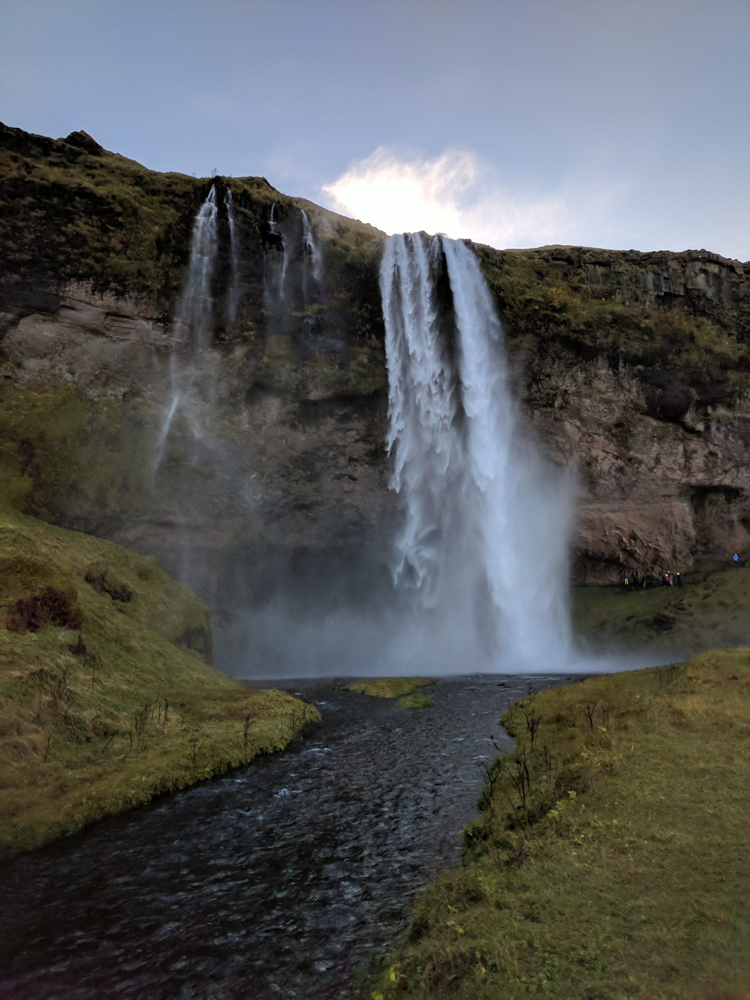
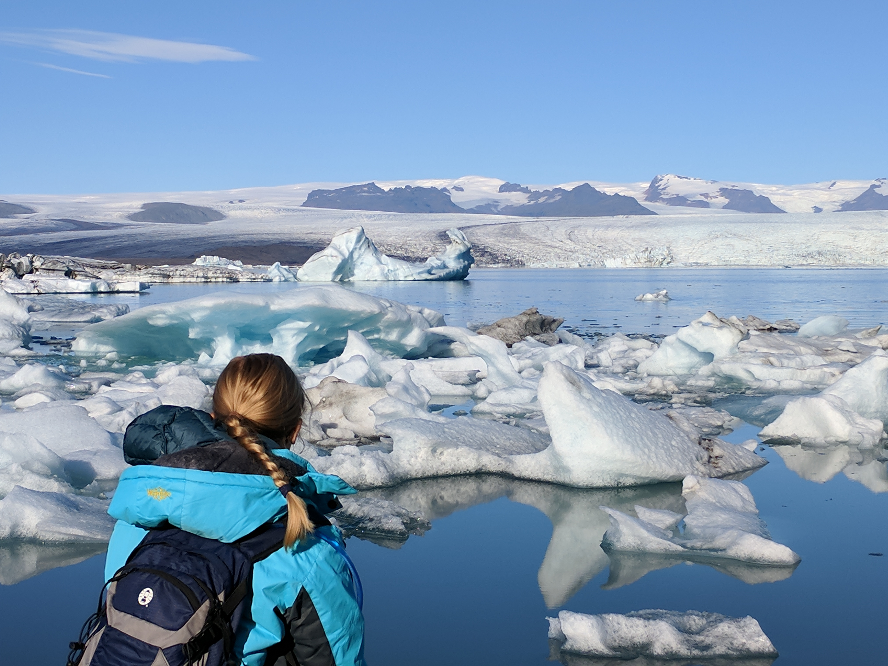
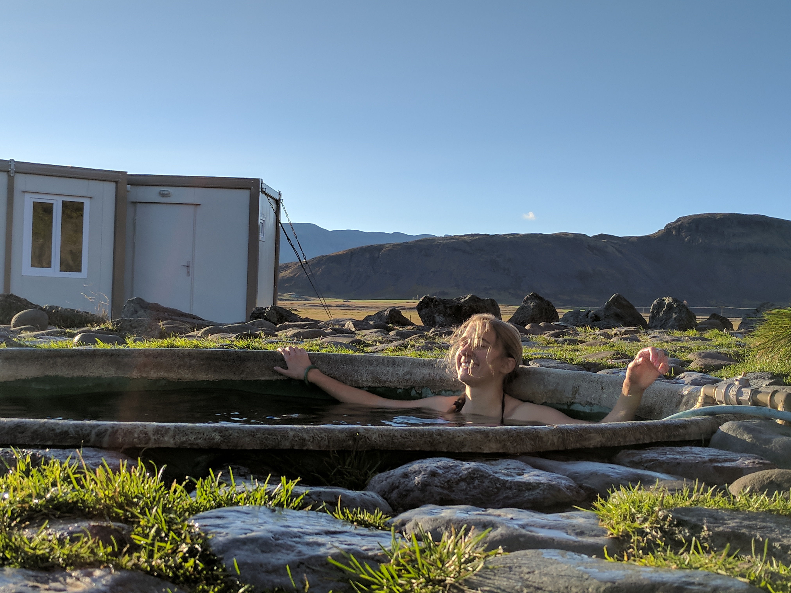
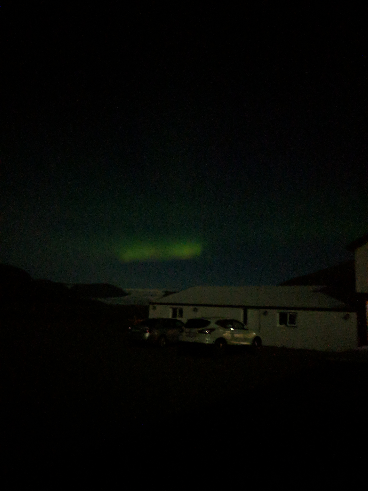

1 / 7

"Seljalandsfoss"
2 / 7

Glacier Lagoon
3 / 7

One of Many Grass Roof Churchs
4 / 7

Steamy HotPots
5 / 7

Black Beach Basalt Cave
6 / 7

Rainbow Waterfall
7 / 7

Grand Finale the Northern Lights!